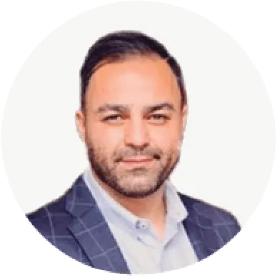
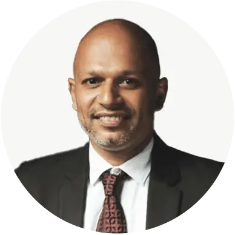

At Design by Ching, we partner with businesses to craft bold,
meaningful brand identities that resonate and endure. From
transformative logos to comprehensive branding strategies, we’ve
empowered our clients to stand out in competitive markets, connect
deeply with their audiences, and achieve measurable growth. Here’s
how we’ve helped visionary entrepreneurs and organizations bring
their stories to life.

“Absolutely loved the logo Mike designed for Walaan Skin. Not
only does it relate to the products we sell, but he also took
the time to incorporate the deeper meaning behind the brand
through a cultural lens—respecting Indigenous Australia in the
process. Thank you!”
Barbie-Lee Kirby
Walaan Skin

“It’s a rare experience to be able to place 100% trust in a
project from start to finish. I’ve worked with Mike in a
different capacity many years ago, so he was always going to be
my first choice for Ozstream’s new logo and branding. Mike is a
creative genius; he works with you to fully understand your
business to create something new, imaginative, and unique to
your strategy. I can’t tell you how much it pleased me to
release the reins and set Mike free to do what he does best. I
knew exactly where Mike had my project at each step, and what I
could expect by our next meeting. If you’re considering a new
logo or brand identity, look no further than Design by Ching. I
promise you won’t be disappointed!”
Brad Franzen
Managing Director, Ozstream

“Mike is a true pleasure to deal with. He’s friendly,
approachable, and responds immediately to inquiries, which is
essential when you need things done quickly. He takes the time
to get to know you and your company, which shows in his unique
style. He comes highly recommended.”
Armin Semsar
RSAT Australia

“Beauty Quest was my brainchild, and I did a lot of dreaming to
bring it to life. Sometimes, when you’re so passionate, you can
become myopic and hit rock bottom with creativity. Then came
Mike Ching, introduced through a mutual friend of my husband.
That was the most fascinating client brief, where we stuck with
one idea, letting go of others. My husband and I unanimously
agreed on our current BQ logo, which was loved by our clients
and well-wishers. It’s so sophisticated for a Sri Lankan salon
and gave us an edge in the industry. People perceive it as bold,
sophisticated, and elegant. Thank you, Mike, for this amazing
output that will last for years to come.”
Nazneen Nazeer
The Beauty Quest
“I’ve used Mike a few times over the past few years. What I like
most is that every time I get a logo, it’s something I haven’t
seen a million times before. So many designers get inspiration
from existing logos and modify them slightly. Mike creates the
popular logos that other designers draw inspiration from.”
Daniel Da Silva
Owner, Anyboat Sydney
“The process from start to finish was comprehensive and
well-organized, clearly indicating detailed planning and
precision. Mike took my brief on board and managed to create
something that precisely embodies who I am and what my brand
stands for.”
Ashleigh Francis
Miss World Australia
“I’ve worked with Mike Ching for years, designing logos and
stationery for our businesses. Mike’s work is highly creative
and cost-efficient. His turnaround time is fantastic, and
nothing is too difficult, even at short notice. I cannot
recommend Mike and Design by Ching highly enough. I urge you to
give him a brief.”
Christian Oey
Group CEO, Clickthru Capital
“Working with Mike was an absolute breeze from start to finish.
As a young woman entrepreneur starting her first business, Mike
offered educated reasoning, expertise, and artful creative
suggestions. His guidance was invaluable in shaping not only my
logo but also my entire brand identity.”
Maria Strauss Snowden
Fitness Consultant

“The second I needed a logo designed, I knew Mike was the only
one who would understand and create the most elegant design. To
Mike, it’s not just a logo—it’s a statement. Amazing person to
work with.”
Zahir Fuard
Ministry of Drones
“Design by Ching has been one of the most important resources
for starting my business. Since the brand logo is the first
thing people see, it’s crucial to send a relevant message that
stands out. That’s why I chose Design by Ching. Just look at his
portfolio, and you’ll find amazing designs. It was a breeze to
work with him and get exactly where I wanted to be with my
groundbreaking new product. I get great feedback wherever I go,
and that speaks for itself.”
Ivan Dragostinov
Managing Director, Wodda Spring Water
“Design by Ching is not only creative but also provides
excellent customer service. They made the entire brand design
and website design seamless while maintaining the highest
quality. Very happy with the results.”
Charbel Azzi
Upkeep & Co

“It was a pleasure working with Mike. He changed my logo as
requested and offered many ideas and designs. It was a quick and
easy process, and I look forward to working with him again.
Thanks, Mike!”
Glen Offereins
Tiny Gainz
“Creativity is a gift, and that gift is with Mike. If you expect
something good, he will make it great. It’s not just about the
design, but the thought process behind it is amazing, making it
more meaningful. After all, he’s a humble and honest person you
can easily work with. If you’re reading this, stop wasting time
and money searching for options.”
Cholmondeley Jay
Paragon IT

“Every company needs a unique brand identity—the face of the
organization that tells a story of its values and makes a strong
impact on customers. As a singer from Sri Lanka, I needed a
unique brand identity for myself. That’s exactly what Design by
Ching delivered. If I were to describe them in five words:
unique, customer-focused, appealing, passionate, and
out-of-the-box.”
Sajjad Hassan
SH Advertising Group
“I appreciate the work and time put into this concept, which I
must say is world-class. It was invaluable to hire a branding
coach who considers logo design his ‘ikigai’ to get the job
done. This will help us build a world-class online marketplace
for a world-class product: Ceylon Tea.”
Choliya Bandara
Ceylon Tea Fair
“We would recommend Design by Ching’s services to anyone needing
branding and logo design for their business. Their compassionate
attitude in understanding our needs and delivering the
best-suited design was exceptional. Thank you, Ching.”
Thileepan Shan
TYE Solutions
“Great design, fast, open-minded, and fantastic follow-up.”
Balraj Ougra
Chiropractor